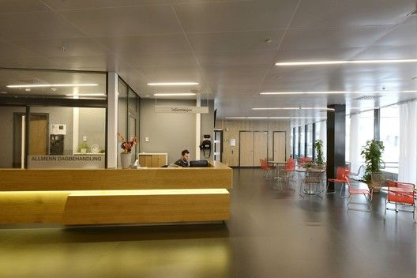

Sobre a Clínica
A Clínica de Saúde Mental Mente Sã, iniciou em meados dos anos 2000, reunindo um grande corpo clínico com excelentes e renomados médicos especialistas em bem-estar, contamos com psiquiatras, neurologistas, todo suporte para terapias e exames para diagnósticos precisos.
Com o passar dos anos, fomos escolhendo profissionais para complementar o atendimento da Clínica de forma a conseguirmos ajudar um amplo espectro de indivíduos com os mais diversos tipos de sofrimento e de transtornos na área de Saúde Mental.
Hoje temos um grupo de médicos e psicóloga com experiência em Psiquiatria de Adultos e da 3ª idade, Psiquiatria da Infância e Adolescência, além de podermos oferecer várias opções de Psicoterapia.
